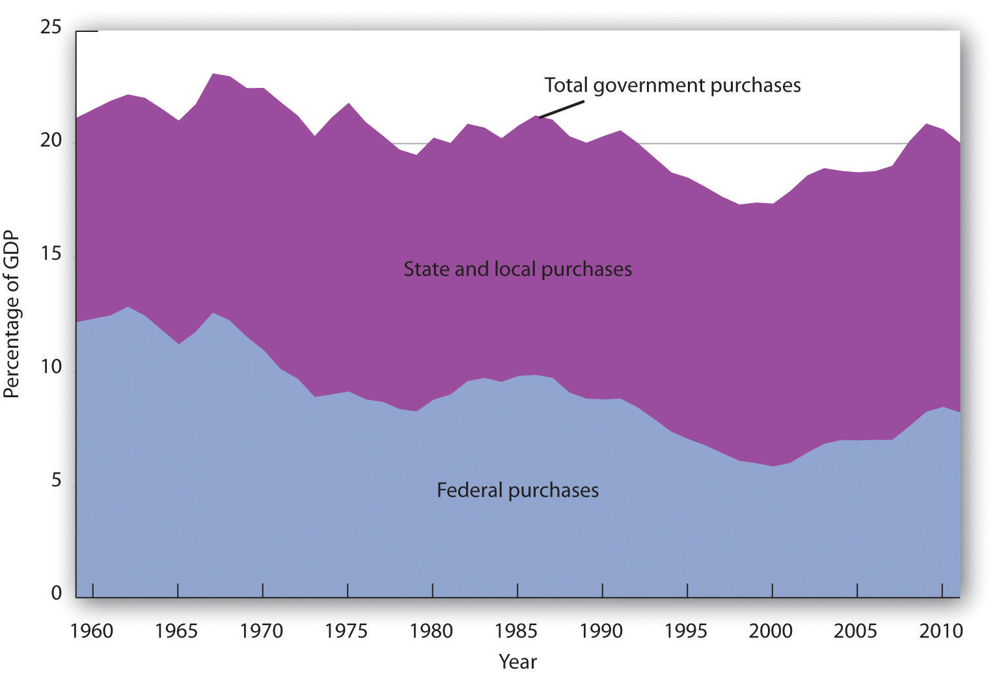
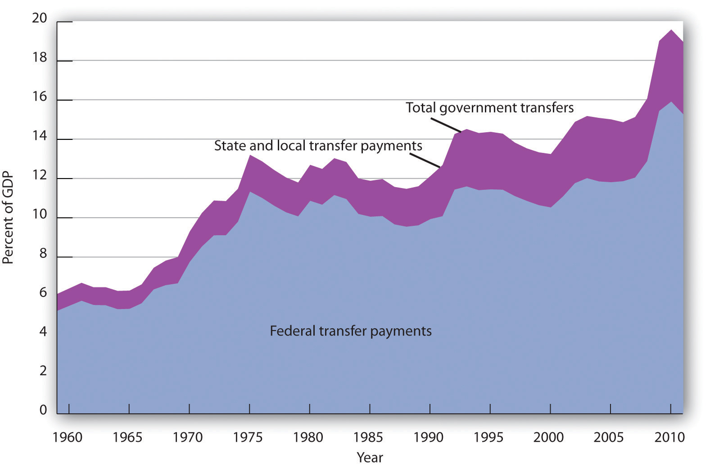
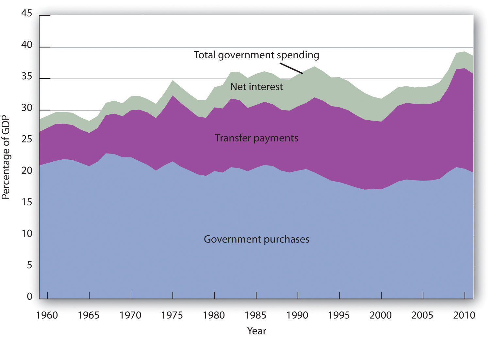
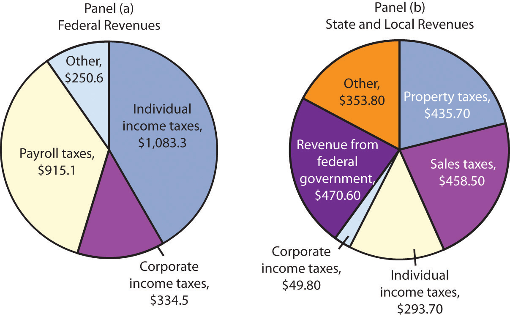
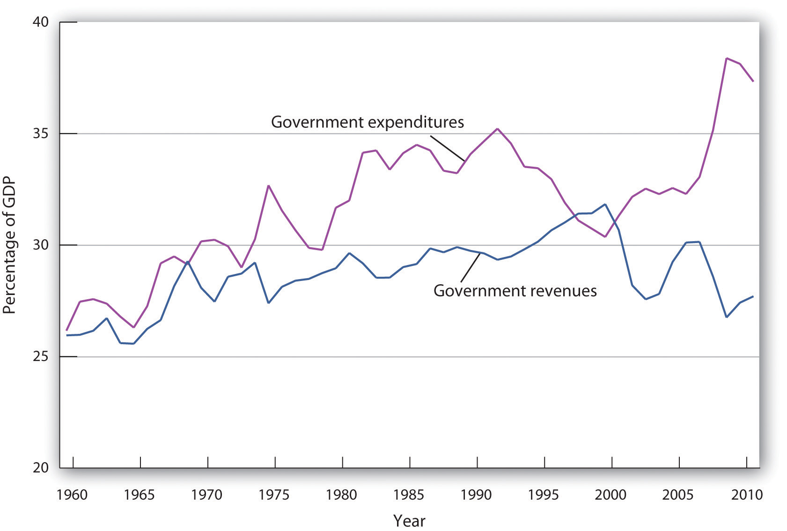
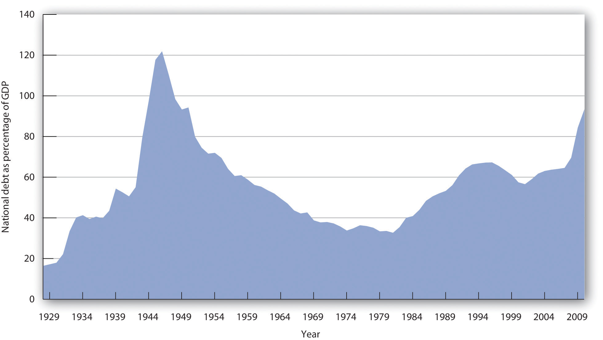
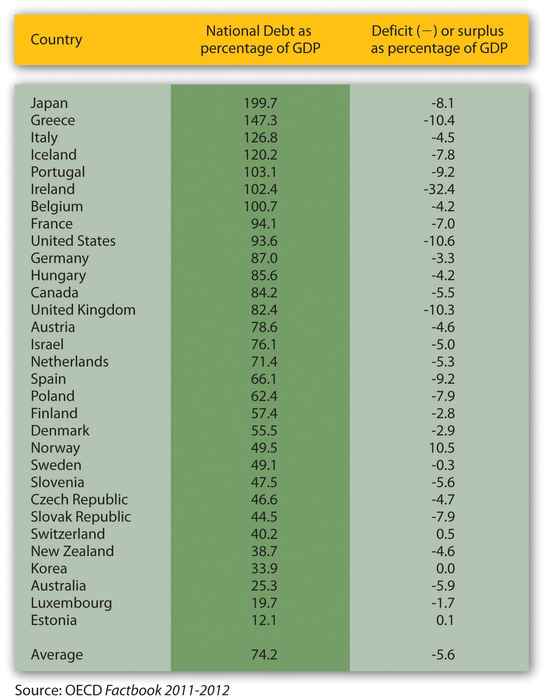

We begin our analysis of fiscal policy with an examination of government purchases, transfer payments, and taxes in the U.S. economy.
The government-purchases component of aggregate demand includes all purchases by government agencies of goods and services produced by firms, as well as direct production by government agencies themselves. When the federal government buys staples and staplers, the transaction is part of government purchases. The production of educational and research services by public colleges and universities is also counted in the government-purchases component of GDP.
While government spending has grown over time, government purchases as a share of GDP declined from over 20% until the early 1990s to under 18% in 2001. Since then, though, the percentage of government purchases in GDP began to increase back toward 20% and then beyond. This first occurred as military spending picked up, and then, more recently, it rose even further during the 2007–2009 recession.
Figure 27.1 "Federal, State, and Local Purchases Relative to GDP, 1960–2011" shows federal as well as state and local government purchases as a percentage of GDP from 1960 to 2011. Notice the changes that have occurred over this period. In 1960, the federal government accounted for the majority share of total purchases. Since then, however, federal purchases have fallen by almost half relative to GDP, while state and local purchases relative to GDP have risen.
Figure 27.1 Federal, State, and Local Purchases Relative to GDP, 1960–2011
Government purchases were generally above 20% of GDP from 1960 until the early 1990s and then below 20% of GDP until the 2007-2009 recession. The share of government purchases in GDP began rising in the 21st century.
Source: Bureau of Economic Analysis, NIPA Table 1.1 and 3.1 (revised February 29, 2012).
A transfer paymentThe provision of aid or money to an individual who is not required to provide anything in exchange. is the provision of aid or money to an individual who is not required to provide anything in exchange for the payment. Social Security and welfare benefits are examples of transfer payments. During the 2007-2009 recession, transfers rose.
A number of changes have influenced transfer payments over the past several decades. First, they increased rapidly during the late 1960s and early 1970s. This was the period in which federal programs such as Medicare (health insurance for the elderly) and Medicaid (health insurance for the poor) were created and other programs were expanded.
Figure 27.2 "Federal, State, and Local Transfer Payments as a Percentage of GDP, 1960–2011" shows that transfer payment spending by the federal government and by state and local governments has risen as a percentage of GDP. In 1960, such spending totaled about 6% of GDP; by 2009, it had risen to about 18%. The federal government accounts for the bulk of transfer payment spending in the United States.
Figure 27.2 Federal, State, and Local Transfer Payments as a Percentage of GDP, 1960–2011
The chart shows transfer payment spending as a percentage of GDP from 1960 through 2011. This spending rose dramatically relative to GDP during the late 1960s and the 1970s as federal programs expanded. More recently, sharp increases in health-care costs have driven upward the spending for transfer payment programs such as Medicare and Medicaid. Transfer payments fluctuate with the business cycle, rising in times of recession and falling during times of expansion. As such, they rose sharply during the deep 2007-2009 recession.
Source: Bureau of Economic Analysis, NIPA Table 1.1, 3.2, and 3.3 (revised February 29, 2012).
Transfer payment spending relative to GDP tends to fluctuate with the business cycle. Transfer payments fell during the late 1970s, a period of expansion, then rose as the economy slipped into a recessionary gap during the 1979–1982 period. Transfer payments fell during the expansion that began late in 1982, then began rising in 1989 as the expansion began to slow. Transfer payments continued to rise relative to GDP during the recessions of 1990–1991 and 2001–2002 and then fell as the economy entered expansionary phases after each of those recessions. During the 2007—2009 recession, transfer payments rose again.
When economic activity falls, incomes fall, people lose jobs, and more people qualify for aid. People qualify to receive welfare benefits, such as cash, food stamps, or Medicaid, only if their income falls below a certain level. They qualify for unemployment compensation by losing their jobs. More people qualify for transfer payments during recessions. When the economy expands, incomes and employment rise, and fewer people qualify for welfare or unemployment benefits. Spending for those programs therefore tends to fall during an expansion.
Figure 27.3 "Government Spending as a Percentage of GDP, 1960–2011" summarizes trends in government spending since 1960. It shows three categories of government spending relative to GDP: government purchases, transfer payments, and net interest. Net interest includes payments of interest by governments at all levels on money borrowed, less interest earned on saving.
Figure 27.3 Government Spending as a Percentage of GDP, 1960–2011
This chart shows three major categories of government spending as percentages of GDP: government purchases, transfer payments, and net interest.
Source: Bureau of Economic Analysis, NIPA Table 1.1 and 3.1 (revised February 29, 2012).
Taxes affect the relationship between real GDP and personal disposable income; they therefore affect consumption. They also influence investment decisions. Taxes imposed on firms affect the profitability of investment decisions and therefore affect the levels of investment firms will choose. Payroll taxes imposed on firms affect the costs of hiring workers; they therefore have an impact on employment and on the real wages earned by workers.
The bulk of federal receipts come from the personal income tax and from payroll taxes. State and local tax receipts are dominated by property taxes and sales taxes. The federal government, as well as state and local governments, also collects taxes imposed on business firms, such as taxes on corporate profits. Figure 27.4 "The Composition of Federal, State, and Local Revenues" shows the composition of federal, state, and local receipts in a recent year.
Figure 27.4 The Composition of Federal, State, and Local Revenues
Federal receipts come primarily from payroll taxes and from personal taxes such as the personal income tax. State and local tax receipts come from a variety of sources; the most important are property taxes, sales taxes, income taxes, and grants from the federal government. Data are for third-quarter 2011, in billions of dollars, seasonally adjusted at annual rates.
Source: Bureau of Economic Analysis, NIPA Table 3.2 and 3.3 (revised February 29, 2012).
The government’s budget balance is the difference between the government’s revenues and its expenditures. A budget surplusSituation that occurs if government revenues exceed expenditures. occurs if government revenues exceed expenditures. A budget deficitSituation that occurs if government expenditures exceed revenues. occurs if government expenditures exceed revenues. The minus sign is often omitted when reporting a deficit. If the budget surplus equals zero, we say the government has a balanced budgetSituation that occurs if the budget surplus equals zero..
Figure 27.5 "Government Revenue and Expenditure as a Percentage of GDP, 1960–2011" compares federal, state, and local government revenues to expenditures relative to GDP since 1960. The government’s budget was generally in surplus in the 1960s, then mostly in deficit since, except for a brief period between 1998 and 2001. Bear in mind that these data are for all levels of government.
Figure 27.5 Government Revenue and Expenditure as a Percentage of GDP, 1960–2011
The government’s budget was generally in surplus in the 1960s, then mostly in deficit since, except for a brief period between 1998 and 2001.
Source: Bureau of Economic Analysis, NIPA Table 1.1 and 3.1 (revised February 29, 2012).
The administration of George W. Bush saw a large increase in the federal deficit. In part, this was the result of the government’s response to the terrorist attacks in 2001. It also results, however, from large increases in federal spending at all levels together with tax cuts in 2001, 2002, and 2003. The federal deficit grew even larger during the administration of Barack Obama. The increase stemmed from both reduced revenues and increased spending resulting from the recession that began in 2007 and the stimulus.
The national debtThe sum of all past federal deficits, minus any surpluses. is the sum of all past federal deficits, minus any surpluses. Figure 27.6 "The National Debt and the Economy, 1929–2010" shows the national debt as a percentage of GDP. It suggests that, relative to the level of economic activity, the debt is well below the levels reached during World War II. The ratio of debt to GDP rose from 1981 to 1996 and fell in the last years of the 20th century; it began rising again in 2002 and has risen substantially since the recession that began in 2007.
Figure 27.6 The National Debt and the Economy, 1929–2010
The national debt relative to GDP is much smaller today than it was during World War II. The ratio of debt to GDP rose from 1981 to 1996 and fell in the last years of the 20th century; it began rising again in 2002, markedly so in 2009 and 2010.
Sources: Data for 1929–1938 from Historical Statistics of the United States, Colonial Times to 1957—not strictly comparable with later data. Data for remaining years from Office of Management and Budget, Budget of the United States Government, Fiscal Year 2012, Historical Tables.
Judged by international standards, the U.S. national debt relative to its GDP is above average. Figure 27.7 "Debts and Deficits for 32 Nations, 2010" shows national debt as a percentage of GDP for 32 countries in 2010. It also shows deficits or surpluses as a percentage of GDP.
In an intense struggle between the Republican-majority U.S. House of Representatives and the Obama administration and the Democratic-majority U.S. Senate in the summer of 2011 that almost resulted in a government shutdown, the Budget Control Act of 2011 resulted in a $1 trillion deficit reduction for the current fiscal year with additional reductions of $1.2–1.5 trillion scheduled to follow. The one thing that all politicians seem to agree on is that this measure will not be enough to put the U.S. government deficit and debt back onto a sustainable long-term path. The various factions differ on what mix of spending cuts and tax increases should be used to control the deficit and debt over the long term. They also disagree on when these changes should take place, given the still-fragile state of the U.S. economy in 2012.
Figure 27.7 Debts and Deficits for 32 Nations, 2010
The chart shows national debt as a percentage of GDP and deficits or surpluses as a percentage of GDP in 2010. The national debt of the United States relative to its GDP was above average among these nations.
Source: Organisation for Economic Co-operation and Development (OECD). Factbook 2011–2012: Economic, Environmental and Social Statistics. OECD Publishing, 2011.
What happens to the national debt when there is a budget surplus? What happens to it when there is a budget deficit? What happens to the national debt if there is a decrease in a surplus? What happens to it if the deficit falls?
One method of assessing the degree to which current fiscal policies affect future generations is through a device introduced in the early 1990s called generational accounting. It measures the impact of current fiscal policies on different generations in the economy, including future generations. Generational accounting is now practiced by governments in many countries, including the United States and the European Union.
As populations age, the burden of current fiscal policy is increasingly borne by younger people in the population. In most countries, economists computing generational accounts have found that people age 40 or below will pay more in taxes than they receive in transfer payments, while those age 60 or above will receive more in transfers than they pay in taxes. The differences are huge. According to a recent study by Jagadeesh Gokhale, summarized in the table below, in 2004 in the United States, a male age 30 could expect to pay $201,300 more than he receives in government transfers during his lifetime, while another male age 75 could expect to receive $171,100 more in transfers than he paid in taxes during his lifetime. That is a difference of $372,400! For future generations, those born after the year 2004, the difference is even more staggering. A male born after the year 2005 can expect to pay $332,200 more in taxes than he will receive in transfer payments. For a woman, the differences are also large but not as great. A woman age 30 in 2004 could expect to pay $30,200 more in taxes than she will receive in transfers during her lifetime, while a woman age 75 could expect to receive transfers of $184,100 in excess of her lifetime tax burden.
The table below gives generational accounting estimates for the United States for the year 2004 for males and females. Figures shown are in thousands of 2004 dollars. Notice that the net burden on females is much lower than for males. That is because women live longer than men and thus receive Social Security and Medicare benefits over a longer period of time. Women also have lower labor force participation rates and earn less than men, and pay lower taxes as a result.
| Year of birth | Age in 2004 | Male | Female |
|---|---|---|---|
| 2005 (future born) | −1 | 333.2 | 26.0 |
| 2004 (newborn) | 0 | 104.3 | 8.1 |
| 1989 | 15 | 185.7 | 42.0 |
| 1974 | 30 | 201.3 | 30.2 |
| 1959 | 45 | 67.8 | −54.1 |
| 1944 | 60 | −162.6 | −189.4 |
| 1929 | 75 | −171.1 | −184.1 |
| 1914 | 90 | −65.0 | −69.2 |
Generational accounting has its critics—for example, the table above only measures direct taxes and transfers but omits benefits from government spending on public goods and services. In addition, government spending programs can be modified, which would alter the impact on future generations. Nonetheless, it does help to focus attention on the sustainability of current fiscal policies. Can future generations pay for Social Security, Medicare, and other retirement and health care spending as currently configured? Should they be asked to do so?
Source: Jagadeesh Gokhale, “Generational Accounting,” The New Palgrave Dictionary of Economics Online, 2nd ed., 2008.
A budget surplus leads to a decline in national debt; a budget deficit causes the national debt to grow. If there is a decrease in a budget surplus, national debt still declines but by less than it would have had the surplus not gotten smaller. If there is a decrease in the budget deficit, the national debt still grows, but by less than it would have if the deficit had not gotten smaller.